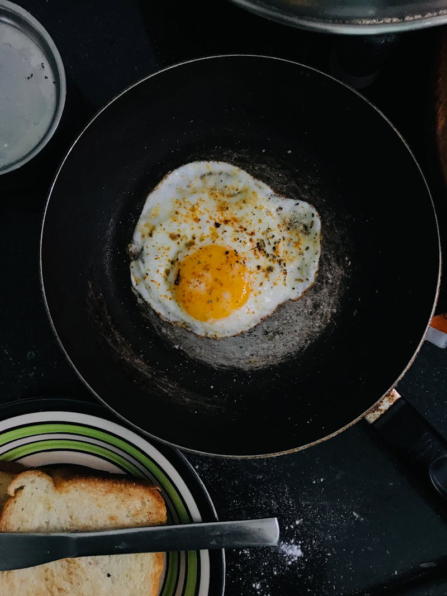
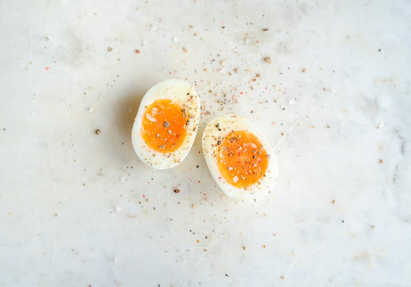
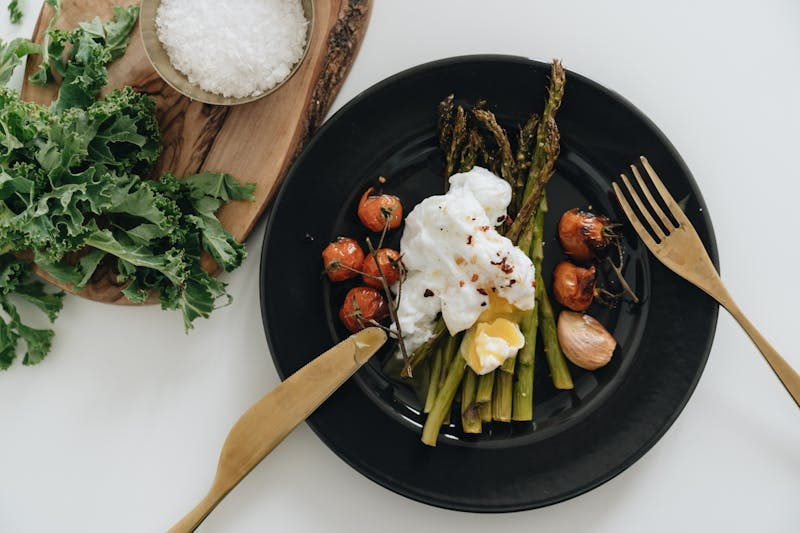
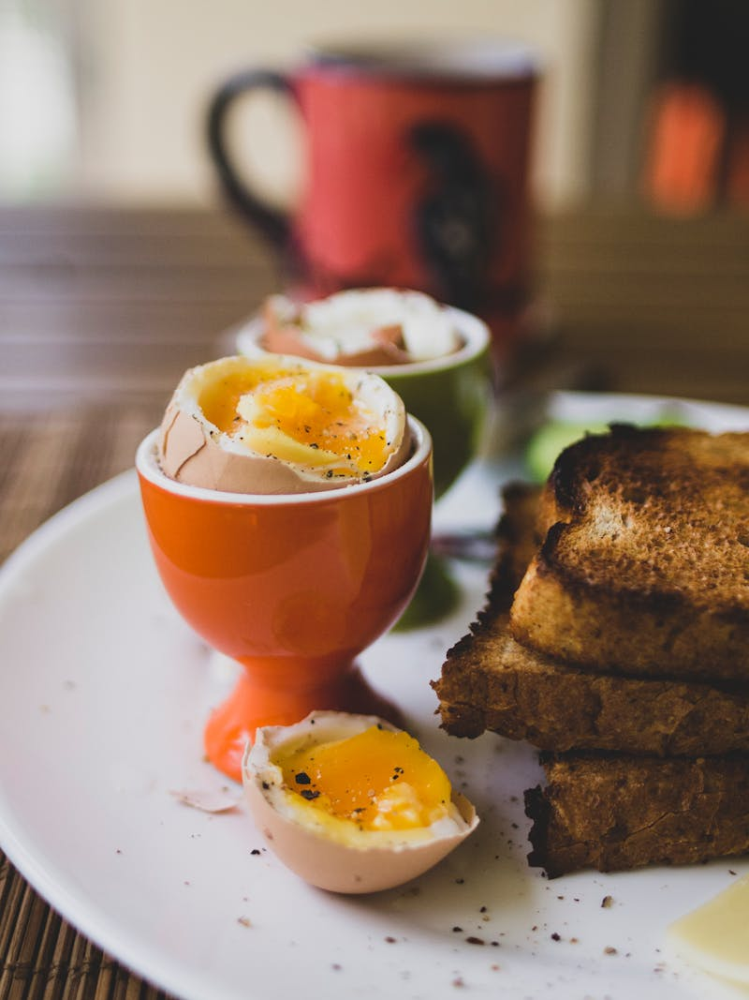

There are dozens of ways to cook an egg, and somehow most people only know two of them. This page is your complete guide to every major egg cooking method known to humankind (not really). Each section breaks down the technique, gives you the key steps, and warns you about the mistakes that turn a perfectly good egg into a sad, rubbery disappointment. Pick a method, grab your pan, and let's make some eggs.

Fried eggs are deceptively simple but easy to mess up. The key variables are heat level and timing. For a sunny side up egg, heat butter or oil in a nonstick pan over medium-low heat. Crack the egg gently into the pan and let it cook undisturbed for about two to three minutes until the white is fully set but the yolk is still runny. You can cover the pan with a lid for the last thirty seconds to help the top of the white set without flipping. For over easy, cook the egg sunny side up first, then carefully flip it and cook for just fifteen to twenty more seconds. Over medium gets about thirty to forty-five seconds on the flip, and over hard gets a full minute or more until the yolk is completely set. The biggest mistake people make is using too much heat, which creates crispy brown edges and a rubbery texture.

Boiling an egg sounds like the easiest thing in the world, and yet the internet is full of people asking how to do it. Here is the truth: place your eggs in a single layer in a pot and cover them with cold water by about an inch. Bring the water to a full rolling boil over high heat. Once boiling, reduce to a gentle simmer and start your timer. Six minutes for soft boiled with a runny, jammy yolk. Nine minutes for medium boiled with a creamy center. Twelve minutes for hard boiled with a fully set yolk. When the timer goes off, immediately transfer the eggs to an ice bath to stop the cooking process. This also makes them much easier to peel. The green ring around the yolk of an overcooked hard boiled egg is iron sulfide — it is harmless but tells the world you left your eggs in the water too long.

The omelet is where eggs go to become fancy. A good omelet is soft, slightly custardy on the inside, and golden on the outside. Beat two or three eggs with a fork until smooth, then pour them into a buttered nonstick pan over medium heat. As the edges begin to set, use a spatula to gently push the cooked egg toward the center while tilting the pan to let the uncooked egg flow to the edges. When the top is still slightly wet but mostly set, add your fillings to one half — cheese, onions, peppers, ham, whatever you like. Fold the other half over the fillings and slide it onto a plate. The entire process should take about two minutes. If your omelet is brown, your heat was too high. A perfect French omelet has zero color on the outside and a creamy, barely-set interior.

Scrambled eggs are basically just omelets with severe trauma if you think about it. They are the most common egg dish on the planet, and therefore are also the most commonly messed up egg dish on the planet. The secret to perfect scrambled eggs is low heat, constant stirring, and pulling them off the burner while they still look slightly underdone. Start by cracking your eggs into a bowl and whisking them until the yolks and whites are fully combined. A pinch of salt just before cooking is highly recommended. Heat butter in a nonstick pan over low heat, pour in the eggs, and stir continuously with a spatula, pushing large curds from the edges toward the center. Remove from heat when the eggs are just barely set with some moisture still visible. They will continue cooking on the plate. Top with cheese if you want to be happy.

Poached eggs are the cooking method that separates casual egg eaters from serious egg enthusiasts. The technique is straightforward but requires some finesse. Fill a saucepan with about three inches of water and bring it to a gentle simmer — you want small bubbles, not a rolling boil. Add a splash of white vinegar, which helps the egg whites coagulate faster. Crack your egg into a small bowl or ramekin first, then create a gentle whirlpool in the water by stirring with a spoon. Slide the egg into the center of the whirlpool, which will help the whites wrap around the yolk. Cook for three to four minutes for a runny yolk, then remove with a slotted spoon and dab it on a paper towel to remove excess water. The most common mistake is using water that is too hot, which blasts the egg apart into wispy white ribbons.

Deviled eggs are the dish you bring to a party when you want people to think you are a better cook than you actually are. They look impressive but are embarrassingly easy to make. Start by hard boiling your eggs using the method above, then peel them and cut them in half lengthwise. Scoop out the yolks into a bowl and mash them with a fork. Mix in mayonnaise, a small amount of yellow mustard, a splash of white vinegar, salt, and pepper until smooth and creamy. Spoon or pipe the filling back into the egg white halves and sprinkle with paprika. That is it. The biggest secret to great deviled eggs is not overcooking the hard boiled eggs in the first place, because a green-ringed yolk makes for a gray, sulfur-tasting filling that no amount of mayo can fix.